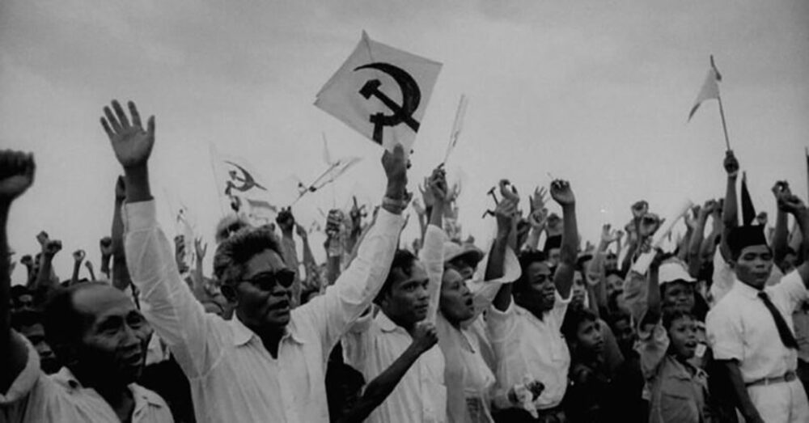
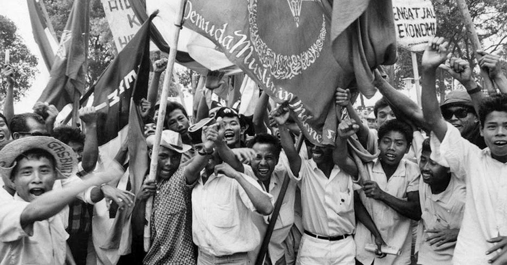
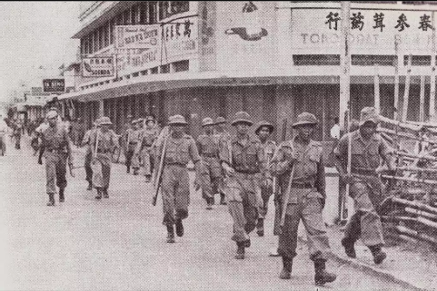
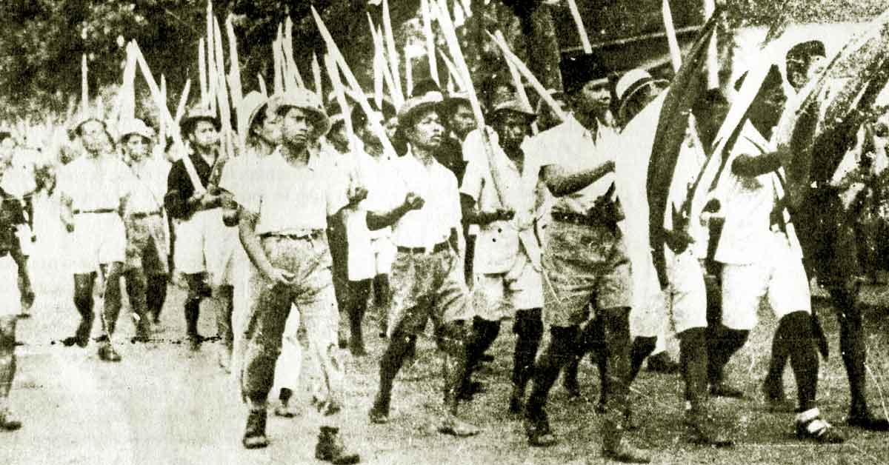
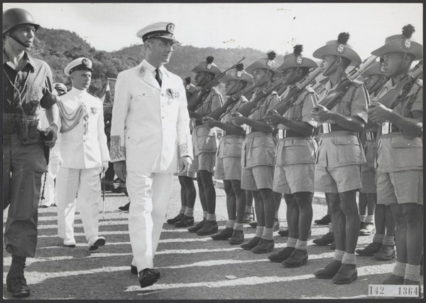

Nusantara Rebellion

PKI Madiun 1948
Pemberontakan PKI 1948 adalah perlawanan komunis di Indonesia yang terjadi setelah politik otonomi Partai Komunis Indonesia (PKI). Berpusat di Jawa Tengah, pemberontakan tersebut dipicu oleh ketegangan politik
pasca-proklamasi kemerdekaan.

Pemberontakan Kartosuwiryo Jawa Barat 1948
Pemberontakan Kartosuwiryo Jawa Barat 1948 adalah perlawanan di Indonesia yang dipimpin oleh Kartosuwiryo melawan pemerintah pusat. Terjadi di Jawa Barat, dipicu oleh ketidakpuasan terhadap politik sentralisasi pemerintahan.

DI/TII
Pemberontakan DI/TII adalah gerakan bersenjata di Indonesia yang dipimpin oleh Darul Islam/Tentara Islam Indonesia. Terjadi di Jawa Barat, dimulai pada 1949 sebagai respons terhadap politik pemerintahan yang sentralis.

APRA
Pemberontakan APRA adalah perlawanan militer yang dipimpin oleh Letnan Kolonel Alex Kawilarang dan Mayor Djatikusumo di Indonesia. Terjadi di Jawa Barat pada tahun 1950, menentang dominasi Belanda dalam Tentara Nasional
Indonesia.

Andi Azis
Pemberontakan Andi Azis adalah perlawanan di Indonesia yang dipimpin oleh Andi Azis melawan pemerintahan Indonesia. Terjadi di Sulawesi Selatan pada 1950, muncul sebagai ketidakpuasan terhadap integrasi wilayah dalam Negara
Kesatuan Republik Indonesia.

Republik Maluku Selatan (RMS)
Pemberontakan Republik Maluku Selatan (RMS) adalah gerakan separatis di Indonesia yang bertujuan memperjuangkan kemerdekaan Maluku Selatan. Terjadi di wilayah Maluku pada 1950-an, muncul akibat ketidakpuasan terhadap
integrasi Maluku ke dalam NKRI.

PRRI dan Permesta
Pemberontakan PRRI dan Permesta adalah gerakan separatis militer-politik di Indonesia. Terjadi di Sumatra Barat (PRRI) dan Sulawesi Utara (Permesta) pada tahun 1950-an, bertujuan menentang otoritas pemerintah pusat yang
dianggap sentralis.

Batalyon 426
Pemberontakan Batalyon 426 adalah insiden di Indonesia di mana pasukan TNI melakukan pemberontakan. Terjadi di Sumatra Barat pada 1950, dipicu oleh ketidakpuasan terhadap kebijakan pemerintah.

Angkatan Umat Islam (AUI)
Pemberontakan Angkatan Umat Islam (AUI) adalah gerakan bersenjata yang dipimpin oleh Kartosuwiryo di Indonesia. Terjadi di Jawa Barat pada 1948, bertujuan menegakkan negara Islam.

Organisasi Papua Merdeka (OPM)
Pemberontakan Organisasi Papua Merdeka (OPM) adalah gerakan kemerdekaan bersenjata di Papua. Terjadi di provinsi Papua, dipicu oleh ketidakpuasan terhadap pemerintahan Indonesia pasca-integrasi Papua ke NKRI pada 1969.
Gerakan Aceh Merdeka
Pemberontakan Gerakan Aceh Merdeka (GAM) adalah perlawanan bersenjata di Aceh. Terjadi di provinsi Aceh, dipicu oleh ketidakpuasan terhadap pemerintahan Indonesia dan hasrat untuk otonomi atau kemerdekaan.